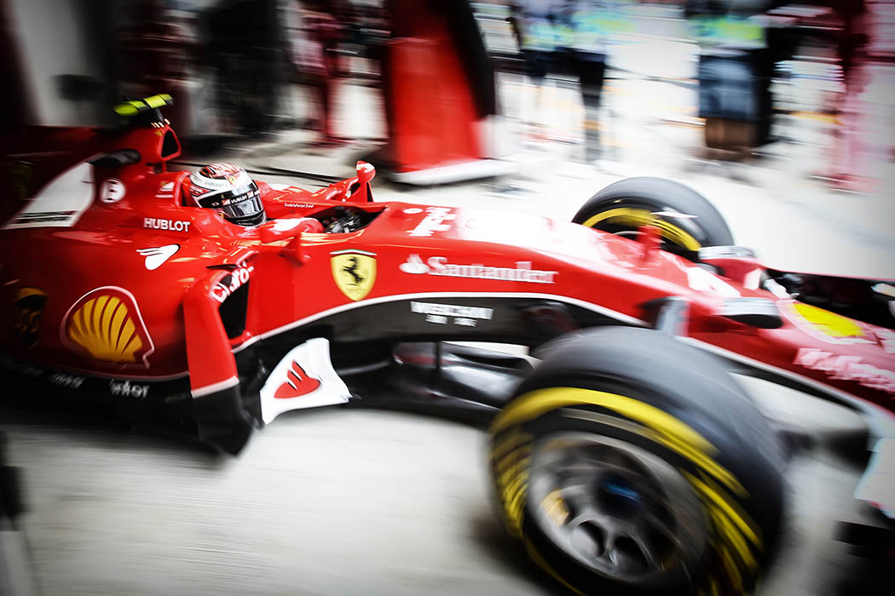

Sochi Autodrom
Sochi Autodrom is the first circuit in Russia to host a Formula 1 Grand Prix and the only Russian circuit which operates all year round. About 150,000 people came to see the 2015 FORMULA 1 RUSSIAN GRAND PRIX, and the race itself is considered to be one of the most intense and thrilling races of that season. Sochi Autodrom located in the Olympic Park complies with the most strict international standards and is the centre of Russian motorsport.
Stands & Lounges

-
Bernie Ecclestone Head of Formula One Management
It has been a fantastic race! The fight for the podium has kept the audience on the edge of their seats. Nobody could have guessed the results. And I would like to once again note the atmosphere in Sochi – it’s great, and it has turned out to be an excellent race weekend. I love coming to Russia.
-
Lewis Hamilton Winner of the 2014 and 2015 Russian Grand Prix
We’ve had a great time, and if you have never been to Russia, you should visit it – this is a great country!
-
Sebastian Vettel Four-time Formula 1 world champion
I’m happy. I’ve had a great day, an excellent race and an outstanding car. Everyone has done a great job, the race has been full of battles, and I think everyone has enjoyed our fight with Kimi Raikkonen.
-
Fernando Alonso Double Formula 1 world champion
It has been an excellent round! We are coming to Russia for the second year in a row, and it’s great. Sochi Autodrom is a challenge to the drivers — it is interesting and, to a certain extent, not easy to compete in Sochi, considering that the engineers have to find the perfect set-up for the circuit, which has fast and slow corners, and the drivers have to drive as close to the walls as possible. This is exciting.
-
Daniil Kvyat Infiniti Red Bull Racing driver
I has been pleased to see so many people coming to support me. I noticed that there have been people supporting other drivers and this shows that more and more people are watching Formula 1 in Russia and coming to the circuit.
Gallery
- 